Iberian passage / public overview
스페인과
포르투갈.
두 사람이 천천히 머무는 15박 16일의 여정입니다. 이 페이지에는 도시 순서와 체류 길이, 도시별 와인 노트만 기록합니다.
Itinerary / overview
여정의
흐름.
두 번의 야간 이동을 사이에 두고 여섯 도시를 차례로 잇는 15박 16일의 여정입니다. 도시마다 머무는 리듬을 따라 다음 목적지로 이동합니다.
-
출국
장거리 비행으로 출발합니다.
-
Madrid
1박합니다.
-
Madrid → Porto
야간 이동합니다.
-
Porto
2박합니다.
-
Lisbon
2박합니다.
-
Lisbon → Sevilla
야간 이동합니다.
-
Sevilla
2박합니다.
-
Sevilla → Granada
안달루시아 소도시를 거쳐 이동하고 1박합니다.
-
Barcelona
열차로 이동해 4박합니다.
-
귀국
장거리 비행으로 돌아옵니다.
Spain / Portugal route
도시를
지도에서.
Wine guide / by city
도시별
와인 노트.
도시마다 눈여겨볼 포도 품종과 현지에서 고를 수 있는 후보를 병 사진과 함께 정리했습니다. 도시 이름을 누르면 내용이 펼쳐지고, 사진을 누르면 라벨을 크게 볼 수 있습니다.
구매 우선순위
- 1 · 화이트 Albillo Real · Encruzado · Moscatel de Alejandría
- 2 · 레드 Garnacha · Castelão · Douro 블렌드
- 3 · 스파클링 Xarel·lo 중심의 병내 2차 발효 (장기 숙성 제외)
특히 추천하는 품종 · 가격은 750ml 현지 소매가의 참고 범위입니다. 도수와 블렌딩 비율은 빈티지마다 달라 '—'나 '라벨 확인'인 칸은 매장에서 라벨을 확인합니다. 사진도 라벨·빈티지가 다를 수 있으니 브랜드와 제품명까지 맞춰 봅니다. ‘지역 와인’은 도시 주변 산지의 와인입니다: 마드리드 Vinos de Madrid, 포르투 Douro·Vinho Verde, 리스본 Lisboa(Bucelas·Colares·Alenquer), 세비야 Jerez·Cádiz 등 서부 안달루시아, 그라나다 Granada, 바르셀로나 Catalunya.
기념 구매 후보 도시별 목록에도 있음
| 도시 | 사진 | 와인 | 품종 | 가격 | 도수 | 추천 이유 · 특징 |
|---|---|---|---|---|---|---|
| Madrid | 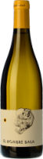 | Comando G El Hombre Bala Albillo Real추천 빈티지 2024 · 파커 92+, 2023과 비슷 | 알비요 레알Albillo Real | €26.90–28.70 | 13% | 그레도스 화강암 고지대 알비요, 선호 품종 정조준사과·배·건초, 부드러운 질감 |
| Porto | 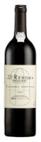 | Niepoort Redoma Tinto추천 빈티지 2023 · 현행 2023 · 평점 미확인 | 틴타 아마렐라 · 투리가 프랑카 · 투리가 나시오날 외 | €27–40 | 약 12.5% | €30대 특별 시음용 두우루 레드, 도수도 무난도수는 원문의 2022 빈티지 기준 |
| Lisbon | 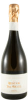 | Quinta de San Michel Malvasia de Colares Bruto추천 빈티지 2023 · 유일 판매 빈티지, 앙금 20개월 | 말바지아 드 콜라르스Malvasia de Colares | €31.95 | 11.5% | 콜라레스 말바지아 20개월 숙성, 브리오슈 풍미레몬·청사과, 토스트·브리오슈, 20개월 숙성 |
| Sevilla | 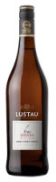 | Lustau Fino Jarana추천 빈티지 NV · 논빈티지 피노, 병입 최근 것 | 특히 추천 품종 팔로미노 피노Palomino Fino | €11.25–11.50 | 약 15% | 셰리는 바에서 딱 한 잔, 아몬드·효모·짭짤함드라이 셰리, 아몬드·효모·짭짤함 |
| Granada | 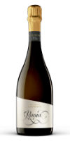 | Calvente Rania Brut Nature추천 빈티지 최신 · 빈티지 정보 불명확, 현행품 | 특히 추천 품종 모스카텔 데 알레한드리아Moscatel de Alejandría | €13.50 | 12% | 브리오슈 취향에 맞는 그라나다 모스카텔 스파클링병내 2차 발효, 약 24개월 숙성 |
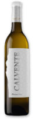 | Calvente Guindalera Blanco추천 빈티지 최신 · 신선한 모스카텔, 최근 2023 | 특히 추천 품종 모스카텔 데 알레한드리아Moscatel de Alejandría | €13–16 | 약 13% | 달지 않은 드라이 모스카텔, 효모 숙성 질감복숭아·오렌지꽃·부드러운 질감 | |
| Barcelona | 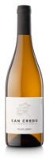 | Celler Credo Can Credo추천 빈티지 2021 · 현행 2021, 파커 95점 | 샤렐로Xarel·lo | €28.70 | 11.5% | 레카레도 가문의 단일 밭 Xarel·lo, 효모 앙금 질감드라이, 깊고 짭조름한 Xarel·lo |
01
Madrid 마드리드
추천 품종
-
특히 추천 품종 Garnacha 가르나차 · 레드
딸기·체리·붉은 과일, 매끈한 탄닌과 적당한 바디.
-
특히 추천 품종 Albillo Real 알비요 레알 · 화이트
살구·모과·배, 풍성한 질감과 짭짤한 여운.
후보 와인
| 종류 | 사진 | 와인 | 품종 | 가격 | 도수 | 추천 이유 · 특징 |
|---|---|---|---|---|---|---|
| 화이트 | 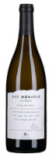 | Las Moradas Albillo Real추천 빈티지 최신 · 신선한 화이트, 현행 2025 | 특히 추천 품종 알비요 레알Albillo Real | €12–15 | 13–13.5% | 살구·모과 풍미에 질감까지, 취향 저격 화이트모과·배·고소한 질감 |
| Comando G El Hombre Bala Albillo Real추천 빈티지 2024 · 파커 92+, 2023과 비슷 | 알비요 레알Albillo Real | €26.90–28.70 | 13% | 그레도스 화강암 고지대 알비요, 선호 품종 정조준사과·배·건초, 부드러운 질감 | ||
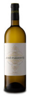 | José Pariente Verdejo추천 빈티지 최신 · 신선한 베르데호 | 베르데호Verdejo | €10–13 | 13% | 가볍고 드라이한 복숭아·허브 베르데호로 입문복숭아·허브 | |
| 레드 | 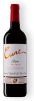 | Cune Crianza추천 빈티지 2022 · 서클링 91 · 파커 90 | 템프라니요 85% · 가르나차·마수엘로 15%Tempranillo 85% · Garnacha·Mazuelo 15% | €7–9 | 14% 주의 | €10 미만으로 마시는 리오하 데일리 레드리오하 레드, 부드러운 데일리 |
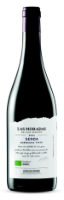 | Las Moradas Senda추천 빈티지 2022 · Peñín 90, 2022 재고 | 가르나차Garnacha | €9–12 | 14% 주의 | €10 안팎으로 즐기는 비슷한 취향의 레드가벼운 가르나차 | |
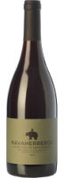 | Bernabeleva Navaherreros Garnacha추천 빈티지 2023 · 파커 92+, 2026–28 음용 | 가르나차Garnacha | €16–19 | 14.5% 주의 | 타파스와 마시기 좋은 과실미 가르나차과실미·유연한 탄닌 |
02
Porto 포르투
추천 품종
-
특히 추천 품종 Alvarinho 알바리뉴 · 화이트
백도·시트러스, 선명한 산미.
-
Touriga Franca · Touriga Nacional · Tinta Roriz 두우루 레드 블렌드
진한 베리 과일과 단단한 구조. 도수는 병별로 확인합니다.
후보 와인
| 종류 | 사진 | 와인 | 품종 | 가격 | 도수 | 추천 이유 · 특징 |
|---|---|---|---|---|---|---|
| 화이트 | 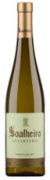 | Soalheiro Alvarinho Clássico추천 빈티지 최신 · 신선한 알바리뉴 | 알바리뉴Alvarinho | €11–14 | 12.5% | 산미·미네랄이 선명한 포르투갈 북부 알바리뉴산미·미네랄 |
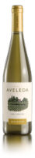 | Aveleda Alvarinho추천 빈티지 최신 · 신선한 비뉴 베르드 | 알바리뉴Alvarinho | €5–8 | 12% | €5~8 가성비로 백도·시트러스를 맛보는 화이트백도·시트러스 | |
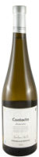 | Anselmo Mendes Contacto Alvarinho추천 빈티지 2025 · 최신, 껍질 접촉 질감 신선 | 알바리뉴Alvarinho | €13–15 | 12.5% | 껍질 접촉·앙금 숙성으로 질감 있되 드라이한 알바리뉴시트러스·꽃·미네랄, 긴 여운 | |
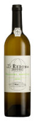 | Niepoort Redoma Branco추천 빈티지 최신 · 현행 2025, 평가 미확인 | 코데가 두 라리뉴 · 돈젤리뉴 · 고베이우 외 | €17–23 | 12% | 두우루 고지대의 정교한 구조감과 산뜻한 끝맛질감과 산미 | |
| 레드 | 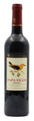 | Casa Ferreirinha Papa Figos Tinto추천 빈티지 2024 · MacLean 90, 2026–30 음용 | 두우루 토착 품종 블렌드 | €7–9 | 약 13.5% | €10 이하로 즐기는 과실미 좋은 포르투갈 레드과실미·부드러운 탄닌 |
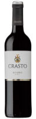 | Quinta do Crasto Crasto Tinto추천 빈티지 2023 · 현행 2023 · 평점 미공개 | 틴타 바호카 · 틴타 호리스 · 투리가 프랑카 외 | €9–12 | 14% 주의 | 체리·자두 풍미의 두우루 데일리 레드체리·자두 | |
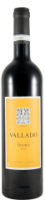 | Quinta do Vallado Douro Tinto추천 빈티지 2024 · 최신, 오크 적어 과일 생생 | 투리가 프랑카 · 투리가 나시오날 · 틴타 호리스 외 | €9–12 | 13.5% | 농익은 붉은 과일과 둥근 타닌, 오크 10%뿐인 데일리 도루익은 붉은 과일·제비꽃·시스투스 | |
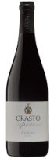 | Quinta do Crasto Crasto Superior추천 빈티지 2022 · 현행 2022 · 평점 미공개 | 소장 · 틴타 호리스 · 투리가 프랑카 외 | €13–18 | 13.5% | 기름진 고기에 어울리는 한 단계 구조감 레드 | |
| Niepoort Redoma Tinto추천 빈티지 2023 · 현행 2023 · 평점 미확인 | 틴타 아마렐라 · 투리가 프랑카 · 투리가 나시오날 외 | €27–40 | 약 12.5% | €30대 특별 시음용 두우루 레드, 도수도 무난도수는 원문의 2022 빈티지 기준 | ||
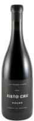 | Luís Seabra Xisto Cru Tinto추천 빈티지 2022 · 파커 94 · 서클링 95 | 알리칸테 부셰 · 돈젤리뉴 틴투 · 말바지아 프레타 외 | €42.95 | 13.5% | 도우루 편암 필드블렌드, 13.5%의 신선한 레드산딸기·솔잎, 은은한 훈연 |
03
Lisbon 리스본
추천 품종
-
특히 추천 품종 Encruzado 엔크루자두 · 화이트
복숭아·견과류 뉘앙스, 오크·효모 숙성과 잘 맞음.
-
특히 추천 품종 Castelão 카스텔랑 · 레드
잘 익은 붉은 과일과 비교적 부드러운 탄닌.
-
Arinto 아린투
레몬·미네랄·상쾌한 산미.
후보 와인
| 종류 | 사진 | 와인 | 품종 | 가격 | 도수 | 추천 이유 · 특징 |
|---|---|---|---|---|---|---|
| 스파클링 | Quinta de San Michel Malvasia de Colares Bruto추천 빈티지 2023 · 유일 판매 빈티지, 앙금 20개월 | 말바지아 드 콜라르스Malvasia de Colares | €31.95 | 11.5% | 콜라레스 말바지아 20개월 숙성, 브리오슈 풍미레몬·청사과, 토스트·브리오슈, 20개월 숙성 | |
| 화이트 | 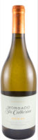 | Bucelas Arinto추천 빈티지 2023 · 유일 판매분, 2026 은메달 | 아린투Arinto | €7–15 | 13% | 시트러스·미네랄 중심, 엔크루자두와 대비되는 맛지역 화이트, 시트러스·미네랄 |
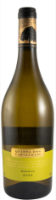 | Quinta dos Carvalhais Colheita Branco추천 빈티지 최신 · 신선한 당 화이트 | 엔크루자두 · 고베이우Encruzado · Gouveio | €9–12 | 13% | €10 안팎으로 맛보는 흰 과일·고소한 화이트흰 과일·고소한 질감 | |
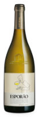 | Esporão Reserva Branco추천 빈티지 2024 · 현행 2024 | 안탕 바즈 · 아린투 · 로페이루Antão Vaz · Arinto · Roupeiro | €14–19 | 13.5% | 배·부드러운 오크로 결을 달리하는 질감 있는 화이트배·오크 | |
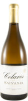 | Colares Fundação Oriente Malvasia추천 빈티지 2018 · 판매 중 유일, 숙성 정점 | 말바지아 드 콜라르스Malvasia de Colares | €19–22 | 12% | 모래밭 비접목 포도, 숙성으로 너티한 질감의 리스본 토착 화이트 | |
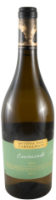 | Quinta dos Carvalhais Encruzado추천 빈티지 2024 · 75cl은 2024만 판매 | 엔크루자두Encruzado | €20–26 | 13% | 핵과류·숙성 질감을 집중해서 느낄 엔크루자두핵과류·숙성 질감 | |
| 레드 | 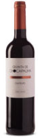 | Quinta de Chocapalha Castelão추천 빈티지 2022 · 현행 2022 · 평점 미공개 | 특히 추천 품종 카스텔랑Castelão | €10–13 | 약 13% | 체리·라즈베리에 부드러운 탄닌, 평소 레드 취향체리·라즈베리·부드러운 탄닌 |
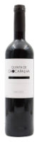 | Quinta de Chocapalha Tinto | 틴타 호리스 · 카스텔랑 · 투리가 나시오날 외 | €11–14 | 14.5% 주의 | €11~14 리스본 지역 레드, 고기 요리용 | |
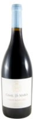 | Casal Sta. Maria Pinot Noir추천 빈티지 2024 · 현행, 신선한 스타일 | 피노 누아Pinot Noir | €30–35 | 13.5% | 대서양 바람 맞은 신트라 해안 피노, 중간 바디·부드러운 타닌 |
04
Sevilla 세비야
추천 품종
-
특히 추천 품종 Palomino Fino 팔로미노 피노 · 화이트·셰리
아몬드·효모·짭짤함. 특히 드라이 Fino 셰리.
-
Moscatel de Alejandría 모스카텔 데 알레한드리아
복숭아·살구·꽃 향. 드라이 여부를 확인합니다.
-
Tintilla de Rota 지역 레드
진한 과실미의 지역 레드.
후보 와인
| 종류 | 사진 | 와인 | 품종 | 가격 | 도수 | 추천 이유 · 특징 |
|---|---|---|---|---|---|---|
| 화이트 | 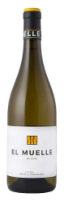 | Luis Pérez El Muelle de Olaso추천 빈티지 최신 · 신선한 헤레스 화이트 | 특히 추천 품종 팔로미노 피노Palomino Fino | €12–15 | 약 13% | 셰리 대신 병으로 즐기는 아몬드·효모 화이트아몬드·짭짤함·효모 숙성 |
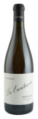 | Luis Pérez La Escribana추천 빈티지 2024 · 파커 95+, 품절 시 2025 | 팔로미노 피노Palomino Fino | €23–30 | 13.5% | 효모막 숙성의 고소하고 짭짤한 특별 시음 화이트 | |
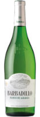 | Barbadillo Blanco de Albariza추천 빈티지 최신 · 가벼운 팔로미노 | 팔로미노 피노Palomino Fino | €5–7 | 11.5% | €5~7로 즐기는 세비야 가성비 화이트 | |
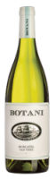 | Botani Moscatel Old Vines추천 빈티지 최신 · 아로마틱 모스카텔 | 모스카텔 데 알레한드리아Moscatel de Alejandría | €14–17 | 11.5% | 드라이한데 복숭아·살구 향이 풍부한 모스카텔살구·복숭아 | |
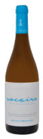 | Primitivo Collantes Socaire추천 빈티지 2023 · 판매처에 표시된 유일 빈티지 | 팔로미노 피노Palomino Fino | €21.70 | 13% | 주정강화 없는 팔로미노, 피노통 24개월 견과 질감짭짤한 알바리사·견과·시트러스 (품절 가능, 재고 확인) | |
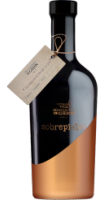 | Colonias de Galeón Sobrepieles추천 빈티지 2025 · 2024 품절, 현재 판매 빈티지 | 비오니에Viognier | €24.50 | 12% | 세비야도 산지, 아카시아 배럴 6개월이라 비스킷 질감자몽·오렌지꽃·비스킷 | |
| 셰리 | 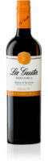 | La Guita Manzanilla추천 빈티지 NV · 솔레라 NV, 신선한 병 고르기 | 팔로미노 피노Palomino Fino | €5–7 | 약 15% | 셰리 한 병 대안, €5~7의 가벼운 가격셰리 대안, 병 가격 |
| Lustau Fino Jarana추천 빈티지 NV · 논빈티지 피노, 병입 최근 것 | 특히 추천 품종 팔로미노 피노Palomino Fino | €11.25–11.50 | 약 15% | 셰리는 바에서 딱 한 잔, 아몬드·효모·짭짤함드라이 셰리, 아몬드·효모·짭짤함 | ||
| 레드 | 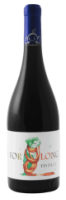 | Forlong Tintilla de Rota추천 빈티지 2021 · 현행 2021, 18개월 숙성 | 틴티야 데 로타Tintilla de Rota | €20–23 | 14.5% 주의 | 세비야에서 만날 과실미·탄닌 균형의 카디스 레드 |
05
Granada 그라나다
추천 품종
-
특히 추천 품종 Moscatel de Alejandría 모스카텔 데 알레한드리아
핵과류·오렌지꽃. Guindalera Blanco와 Rania에 주목합니다.
-
지역 레드 블렌드 Syrah · Cabernet Sauvignon · Merlot 등
육류와 페어링합니다.
후보 와인
| 종류 | 사진 | 와인 | 품종 | 가격 | 도수 | 추천 이유 · 특징 |
|---|---|---|---|---|---|---|
| 스파클링 | Calvente Rania Brut Nature추천 빈티지 최신 · 빈티지 정보 불명확, 현행품 | 특히 추천 품종 모스카텔 데 알레한드리아Moscatel de Alejandría | €13.50 | 12% | 브리오슈 취향에 맞는 그라나다 모스카텔 스파클링병내 2차 발효, 약 24개월 숙성 | |
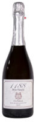 | Muñana 1188 Brut Nature추천 빈티지 2021 · 현행 2021 | 샤르도네 · 소비뇽 블랑 · 모스카텔Chardonnay · Sauvignon Blanc · Moscatel | €15 | 12.5% | 그라나다 고지대 전통방식, 브리오슈·견과 노트브리오슈·견과·잔잔한 기포 (병 숙성 기간 미확인) | |
| 화이트 | Calvente Guindalera Blanco추천 빈티지 최신 · 신선한 모스카텔, 최근 2023 | 특히 추천 품종 모스카텔 데 알레한드리아Moscatel de Alejandría | €13–16 | 약 13% | 달지 않은 드라이 모스카텔, 효모 숙성 질감복숭아·오렌지꽃·부드러운 질감 | |
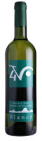 | Cuatro Vientos 4V Blanco추천 빈티지 최신 · 영 화이트, 최신 빈티지 | 확인 불가 | €7–9 | 확인 불가 | €7~9로 즐기는 알푸하라 지역 가성비 화이트 | |
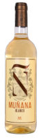 | Muñana Blanco추천 빈티지 2025 · 최신, 신선함이 핵심인 영 와인 | 샤르도네 · 소비뇽 블랑 · 모스카텔 데 알레한드리아Chardonnay · Sauvignon Blanc · Moscatel de Alejandría | €8.50 | 12% | 고지대 산도로 복숭아 과실이 상쾌한 데일리 화이트복숭아·사과·흰꽃 | |
| Botani Moscatel Old Vines추천 빈티지 최신 · 아로마틱 모스카텔 | 모스카텔 데 알레한드리아Moscatel de Alejandría | €14–17 | 11.5% | Guindalera의 모스카텔 향과 비교하는 말라가 화이트말라가 지역 화이트 | ||
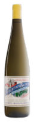 | Telmo Rodríguez Mountain Blanco추천 빈티지 2024 · 2023 강풍 피해, 2024 정상 | 모스카텔 데 알레한드리아Moscatel de Alejandría | €19.55 | 13.5% | 말라가 고지대 드라이 모스카텔, 취향 품종 그대로말라가 와인, 머스캣 향·짭조름한 여운 | |
| 레드 | 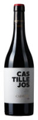 | Calvente Castillejos | 카베르네 소비뇽 46% · 시라 35% · 메를로 15% 외 | €18–22 | 14.5% 주의 | 그라나다 고지대 개성의 레드, 육류와 함께 |
06
Barcelona 바르셀로나
추천 품종
-
특히 추천 품종 Xarel·lo 샤렐로 · 화이트·스파클링
산미·질감·숙성 잠재력.
-
Macabeu · Parellada 마카베우 · 파레야다
산뜻한 꽃·과일 풍미, 전통방식 스파클링.
-
특히 추천 품종 Garnatxa · Carinyena 가르나차 · 카리녜나
붉은 과일과 풍부한 바디의 카탈루냐 레드.
후보 와인
| 종류 | 사진 | 와인 | 품종 | 가격 | 도수 | 추천 이유 · 특징 |
|---|---|---|---|---|---|---|
| 스파클링 | 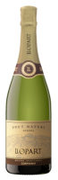 | Llopart Reserva Brut Nature추천 빈티지 2022 · 현행 2022, Atkin 90점 | 샤렐로 45% · 마카베오 35% · 파레야다 20%Xarel·lo 45% · Macabeo 35% · Parellada 20% | €15–18 | 확인 불가 | 로저 구라트 브뤼 나튀르 팬에게 맞는 우아한 드라이드라이 |
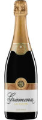 | Gramona Aliances La Cuvée 2022추천 빈티지 2022 · 현행 2022, 2021은 92점 | 샤렐로 중심 전통 품종 블렌드 | €16–20 | 12% | 18–24개월 숙성 기준에 맞는 Xarel·lo 스파클링복숭아·아몬드·빵 풍미, 24개월 숙성 | |
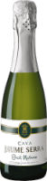 | Jaume Serra Brut Nature추천 빈티지 NV · 논빈티지 데일리 카바 | 마카베오 · 샤렐로 · 파레야다 · 샤르도네Macabeo · Xarel·lo · Parellada · Chardonnay | €4–6 | 11.5% | €4~6 초저가로 다시 만나는 기준 까바초저가 까바 | |
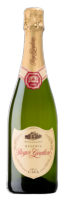 | Roger Goulart Brut Reserva / Brut Nature추천 빈티지 최신 · 젊은 카바, 매장 2023 | 샤렐로 40% · 마카베오 30% · 파레야다 30%Xarel·lo 40% · Macabeo 30% · Parellada 30% | €9–14 | 12% | 현지 €9~14로 다시 마시는 취향 비교 기준취향 비교 기준 | |
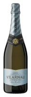 | Vilarnau Brut Reserva추천 빈티지 NV · 논빈티지, Falstaff 89점 | 비우라 · 샤렐로 · 파레야다Viura · Xarel·lo · Parellada | €11–14 | 11.2% | 자우메 세라의 편안함에 풍미를 더한 부드러운 기포과실 중심 | |
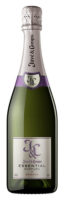 | Juvé & Camps Essential Púrpura추천 빈티지 2022 · 현행 2022, 24개월+ 숙성 | 마카베오 · 샤렐로 · 파레야다Macabeo · Xarel·lo · Parellada | €12–15 | 12.5% | €12~15에 토스트 향을 즐기는 균형 잡힌 까바토스트 향 | |
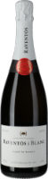 | Raventós i Blanc Blanc de Blancs추천 빈티지 2024 · 현행 2024, 파커 93점 | 마카베오 · 샤렐로 · 파레야다 · 말바시아 데 시체스Macabeo · Xarel·lo · Parellada · Malvasia de Sitges | €16–20 | 12% | 로저 구라트보다 정교하고 산뜻한 한 단계 위산뜻한 스타일 | |
| 화이트 | 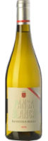 | Raventós d'Alella Pansa Blanca추천 빈티지 2025 · 최신, 신선한 스타일 기준 | 판사 블랑카Pansa Blanca | €10.30 | 13% | 바르셀로나 바로 옆 알레야 토착 품종, 묵직한 질감흰 과실·은은한 쌉쌀함 |
| Gramona Gessamí추천 빈티지 최신 · 아로마틱 영 화이트, 2025 | 모스카텔 · 소비뇽 블랑 · 게뷔르츠트라미너Moscatel · Sauvignon Blanc · Gewürztraminer | €12–15 | 확인 불가 | 백도·꽃향의 페네데스 향긋한 무기포 화이트백도·꽃 | ||
| Jean Leon Vinya Gigi Chardonnay추천 빈티지 2024 · 현행 2024, 문두스비니 금상 | 샤르도네Chardonnay | €24–26 | 13% | €24~26 샤르도네로 즐기는 특별 시음·기념 구매 | ||
| Celler Credo Can Credo추천 빈티지 2021 · 현행 2021, 파커 95점 | 샤렐로Xarel·lo | €28.70 | 11.5% | 레카레도 가문의 단일 밭 Xarel·lo, 효모 앙금 질감드라이, 깊고 짭조름한 Xarel·lo | ||
| Terroir al Límit Terra de Cuques Blanc추천 빈티지 2023 · 현행 2023, 전작 파커 93 | 가르나차 블랑카 · 페드로 히메네스Garnacha Blanca · Pedro Ximénez | €31–39 | 13% | 특별한 경험용으로 고른 바르셀로나 화이트 | ||
| 레드 | Terroir al Límit Terra de Cuques Negre추천 빈티지 2022 · 현행 2022, 파커 93점 | 특히 추천 품종 가르나차 · 카리녜나Garnacha · Cariñena | €35–39 | 13.5% | 특별한 경험용 1순위 레드, 우아하고 과하지 않은 도수과실미·실키한 탄닌 | |
| Torres Sangre de Toro Original추천 빈티지 2024 · 현행 2024, 영 데일리 레드 | 가르나차 · 카리녜나Garnacha · Cariñena | €6–8 | 13.5% | €6~8 가성비로 마시는 대중적 카탈루냐 레드 | ||
| Succés La Cuca de Llum추천 빈티지 2023 · 최신 판매분, 신선한 과실형 | 트레파트Trepat | €10.30 | 12% | 토착 트레파트, 부드러운 타닌에 낮은 도수의 레드잘 익은 붉은 과실·후추·펜넬 | ||
| Acústic Montsant추천 빈티지 2022 · 현행 2022, Peñín 91점 | 카리녜나 70% · 가르나차 30%Cariñena 70% · Garnacha 30% | €13–17 | 15% 주의 | 과실미를 편안하게 즐기는 몬트산트, 도수 주의 | ||
| Álvaro Palacios Camins del Priorat추천 빈티지 2024 · 파커 90–92, 최신 출시 | 가르나차 40% · 카베르네 소비뇽 21% · 메를로 18% 외 | €21–27 | 14.5% 주의 | 기름진 고기와 함께 즐길 구조감 있는 프리오라트 | ||
| 로제 | Raventós i Blanc de Nit Rosé추천 빈티지 2024 · 현행 2024, 파커 92+ | 확인 불가 | €20–23 | 확인 불가 | 취향 밖이지만 드라이 로제 스파클링 도전 후보로제 도전 후보 | |
| Gramona Roent Rosé추천 빈티지 2023 · 현행 판매 2023, 점수 미확인 | 피노 누아 · 가르나차Pinot Noir · Garnacha | €24–26 | 12% | 구조감 있는 드라이 로제 스파클링 도전 후보로제 도전 후보 |
후순위·제외 와인 10종 장기 숙성 스파클링과 높은 도수
정보·사진 출처 2026-10-23 확인
가격·추천 품종·대표 추천의 도수는 사용자 제공 와인 가이드(PDF)를 따랐고, 표의 품종과 비어 있던 도수는 아래 페이지에서 확인했습니다. ‘추천 빈티지’는 현지 매장에서 살 수 있는 연도 중 2026년 11월에 마시기 좋은 해를 생산자 자료·산지 작황 평가·평론 시음 적기로 고른 것입니다. ‘최신’은 신선함이 중요한 스타일이라 가장 최근 출시분을, NV는 무빈티지를 뜻합니다. 사진은 병 식별용이며 라벨·빈티지가 매장 재고와 다를 수 있습니다.
- Las Moradas Albillo Real — 정보 bodeboca.fr, bodeboca.pt · 사진 원문 가이드(PDF) 수록 이미지
- Comando G El Hombre Bala Albillo Real — 정보 bodeboca.com, bodeboca.pt · 사진 vinissimus.com
- José Pariente Verdejo — 정보 bodeboca.fr, bodeboca.pt · 사진 josepariente.com
- Bernabeleva Navaherreros Garnacha — 정보 dn.no, systembolaget.se, vinissimus.com · 사진 vinissimus.com (2014 빈티지 라벨)
- Las Moradas Senda — 정보 bodeboca.pt · 사진 thewinereserve.co.uk (2021 빈티지 라벨)
- Cune Crianza — 정보 agronewscastillayleon.com, bodeboca.pt, decantalo.com · 사진 cvne.com
- Aveleda Alvarinho — 정보 deco.proteste.pt, garrafeiranacional.com · 사진 aveledavinhoverde.com
- Soalheiro Alvarinho Clássico — 정보 garrafeiranacional.com · 사진 palmbay.com
- Niepoort Redoma Branco — 정보 garrafeiranacional.com, garrafeiranacional.com · 사진 bodeboca.pt
- Casa Ferreirinha Papa Figos Tinto — 정보 wineonline.ie, garrafeiranacional.com, nataliemaclean.com (일부 검색 요약) · 사진 원문 가이드(PDF) 수록 이미지
- Quinta do Crasto Crasto Tinto — 정보 garrafeiranacional.com, quintadocrasto.wine · 사진 quintadocrasto.wine
- Quinta do Crasto Crasto Superior — 정보 garrafeiranacional.com, quintadocrasto.wine (일부 검색 요약) · 사진 quintadocrasto.wine
- Niepoort Redoma Tinto — 정보 bodeboca.pt, garrafeiranacional.com (일부 검색 요약) · 사진 bodeboca.pt (2021 빈티지 라벨)
- Luís Seabra Xisto Cru Tinto — 정보 garrafeiranacional.com, garrafeiranacional.com · 사진 garrafeiranacional.com
- Anselmo Mendes Contacto Alvarinho — 정보 garrafeiranacional.com, vinmonopolet.no · 사진 garrafeiranacional.com
- Quinta do Vallado Douro Tinto — 정보 garrafeiranacional.com, quintadovallado.com, quintadovallado.com · 사진 garrafeiranacional.com
- Quinta dos Carvalhais Colheita Branco — 정보 garrafeiranacional.com · 사진 garrafeiranacional.com (라벨 표기는 Quinta dos Carvalhais Branco)
- Quinta dos Carvalhais Encruzado — 정보 garrafeiranacional.com · 사진 garrafeiranacional.com
- Esporão Reserva Branco — 정보 garrafeiranacional.com · 사진 esporao.com
- Bucelas Arinto — 정보 garrafeiranacional.com · 사진 garrafeiranacional.com (대표 제품 Morgado de Sta. Catherina 2022)
- Quinta de Chocapalha Castelão — 정보 highburyvintners.co.uk, radar.wine, continente.pt · 사진 원문 가이드(PDF) 수록 이미지
- Quinta de Chocapalha Tinto — 정보 continente.pt, gute-weine.de · 사진 continente.pt
- Quinta de San Michel Malvasia de Colares Bruto — 정보 garrafeiranacional.com · 사진 garrafeiranacional.com
- Colares Fundação Oriente Malvasia — 정보 garrafeiranacional.com · 사진 garrafeiranacional.com
- Casal Sta. Maria Pinot Noir — 정보 garrafeiranacional.com · 사진 garrafeiranacional.com
- Luis Pérez El Muelle de Olaso — 정보 bodeboca.pt · 사진 원문 가이드(PDF) 수록 이미지
- Botani Moscatel Old Vines — 정보 bodeboca.pt · 사진 jorgeordonez.es
- Luis Pérez La Escribana — 정보 bodeboca.pt · 사진 europeancellars.com
- Barbadillo Blanco de Albariza — 정보 cestashop.com · 사진 barbadillo.com
- Lustau Fino Jarana — 정보 bodeboca.pt, bodeboca.pt · 사진 원문 가이드(PDF) 수록 이미지
- La Guita Manzanilla — 정보 bodeboca.com, decantalo.com, vinissimus.com (일부 검색 요약) · 사진 matthewclark.co.uk
- Forlong Tintilla de Rota — 정보 bodeboca.com, bodeboca.pt (일부 검색 요약) · 사진 bodegabierta.es (2018년 무렵 라벨)
- Colonias de Galeón Sobrepieles — 정보 vinissimus.com, vinissimus.com · 사진 vinissimus.com
- Primitivo Collantes Socaire — 정보 bodeboca.fr, sherrynotes.com · 사진 bodeboca.fr
- Calvente Rania Brut Nature — 정보 vivino.com · 사진 원문 가이드(PDF) 수록 이미지
- Calvente Guindalera Blanco — 정보 vinmonopolet.no · 사진 원문 가이드(PDF) 수록 이미지
- Cuatro Vientos 4V Blanco — 사진 bodegacuatrovientos.es
- Calvente Castillejos — 정보 vinmonopolet.no · 사진 vinmonopolet.no
- Telmo Rodríguez Mountain Blanco — 정보 telmorodriguez.com · 사진 telmorodriguez.com
- Muñana 1188 Brut Nature — 정보 bodegasmunana.com, bodegasmunana.com · 사진 bodegasmunana.com
- Muñana Blanco — 정보 bodegasmunana.com, bodegasmunana.com · 사진 bodegasmunana.com
- Gramona Aliances La Cuvée 2022 — 정보 bowlerwine.com, vinissimus.com (일부 검색 요약) · 사진 원문 가이드(PDF) 수록 이미지
- Raventós i Blanc Blanc de Blancs — 정보 libertywines.co.uk, vinissimus.com · 사진 gute-weine.de
- Llopart Reserva Brut Nature — 정보 bodeboca.com, decantalo.com, gourmethunters.com (일부 검색 요약) · 사진 llopart.com
- Juvé & Camps Essential Púrpura — 정보 shop.juveycamps.com, licorea.com, vinissimus.com, vinissimus.com (일부 검색 요약) · 사진 casapablo.es
- Vilarnau Brut Reserva — 정보 falstaff.com, lcbo.com · 사진 vilarnau.es
- Roger Goulart Brut Reserva / Brut Nature — 정보 cvne.com, decanter.com · 사진 rogergoulart.com
- Jaume Serra Brut Nature — 정보 vinissimus.com, vivino.com · 사진 systembolaget.se (375ml 하프 보틀 사진)
- Gramona Gessamí — 정보 bodeboca.com, gourmethunters.com (일부 검색 요약) · 사진 europeancellars.com (2019 빈티지 라벨)
- Celler Credo Can Credo — 정보 shop.recaredo.com, vinissimus.com · 사진 shop.recaredo.com
- Jean Leon Vinya Gigi Chardonnay — 정보 jeanleon.com, torres.es (일부 검색 요약) · 사진 jeanleon.com
- Terroir al Límit Terra de Cuques Blanc — 정보 gourmethunters.com, gourmethunters.com, gute-weine.de (일부 검색 요약) · 사진 lebendigeweine.de
- Torres Sangre de Toro Original — 정보 decanter.com, vinissimus.com · 사진 torres.es
- Acústic Montsant — 정보 decanter.com, decantalo.com, gourmethunters.com · 사진 acusticceller.com
- Álvaro Palacios Camins del Priorat — 정보 grandcruwijnen.nl, licorea.com, vinissimus.com · 사진 millesima-usa.com
- Terroir al Límit Terra de Cuques Negre — 정보 decanter.com, vinissimus.com · 사진 lebendigeweine.de
- Raventós i Blanc de Nit Rosé — 정보 vinissimus.com · 사진 nyc.flatiron-wines.com
- Gramona Roent Rosé — 정보 bodeboca.com, decantalo.com, lebendigeweine.de · 사진 lebendigeweine.de
- Succés La Cuca de Llum — 정보 vinissimus.com, vinissimus.com · 사진 vinissimus.com
- Raventós d'Alella Pansa Blanca — 정보 vinissimus.com, vinissimus.com · 사진 vinissimus.com
- Gramona Imperial — 정보 gramona.com, gourmethunters.com, licorea.com · 사진 gute-weine.de
- Gramona III Lustros — 정보 gramona.com, gramona.com, gourmethunters.com, vilaviniteca.es · 사진 lebendigeweine.de
- Recaredo Terrers — 정보 radar.wine, shop.recaredo.com, recaredo.com, recaredo.com · 사진 acellars.com.au (이미지 직접 링크)
- Recaredo Intens Rosat — 정보 shop.recaredo.com, globerada.com, recaredo.com, recaredo.com · 사진 cdn.imweb.me (이미지 직접 링크)
- Juvé & Camps Reserva de la Familia — 정보 finditapp.es, shop.juveycamps.com, gourmethunters.com · 사진 sgfm.elcorteingles.es (이미지 직접 링크)
- Segura Viudas Reserva Heredad — 정보 seguraviudas.com, seguraviudas.com, licorea.com, vino.com · 사진 vantagewine.com.my (이미지 직접 링크)
- Roger Goulart Gran Reserva Josep Valls — 정보 cvne.com, cvne.com, tienda.cvne.com · 사진 tienda.cvne.com
- Murganheira Super Reserva Bruto — 정보 murganheira.com, continente.pt, garrafeiranacional.com · 사진 images.vivino.com (이미지 직접 링크)
- Lustau Amontillado Los Arcos — 정보 lustau.es, lustau.es · 사진 cdn11.bigcommerce.com (이미지 직접 링크)
- Viña Ardanza Reserva — 정보 tienda.riojalta.com, licorea.com, riojalta.com, riojalta.com, vino.com · 사진 lcbo.com
Protected detail
둘만의 계획을
열어보기.
준비된 암호문이 있을 때만 비밀 구문으로 상세 일정을 엽니다. 입력한 구문은 이 브라우저의 저장소나 URL에 남지 않습니다.